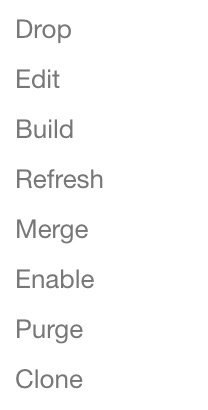

kylin的页面上可操作的行为不多，有很多操作是需要通过http接口来传递命令实现的。下面分别进行说明
1. 界面可操作的
- enable/ready的cube
- disable的cube

2. 界面无操作
删除segment
只能删除第一个或者最后一个segment，做不到删除中间位置的。1
curl -X DELETE --user ADMIN:kylin -H "Content-Type: application/json" http://10.11.22.33:7070/kylin/api/cubes/cubename/segs/20180925000000_20180926000000
备份元数据
备份全部元数据1
./bin/metastore.sh backup
备份指定元数据
1
sh bin/metastore.sh fetch cube/cubename.json
恢复元数据
无论指定的目录是全部的还是只有某个cube的，直接恢复就可以了。1
./bin/metastore.sh restore $KYLIN_HOME/meta_backups/meta_2018_08_31_14_30_33
清空元数据 慎用!!
1
./bin/metastore.sh reset
清理元数据
一定记得要清理元数据，如果不按时清理，元数据会膨胀到无法清理的地步。
清理之前要记得备份1
2./bin/metastore.sh clean
./bin/metastore.sh clean --delete true删除无用数据
随着merge drop等操作，有一些遗留的数据在hive和hbase中，要定期清理1
2${KYLIN_HOME}/bin/kylin.sh org.apache.kylin.tool.StorageCleanupJob --delete false
${KYLIN_HOME}/bin/kylin.sh org.apache.kylin.tool.StorageCleanupJob --delete true